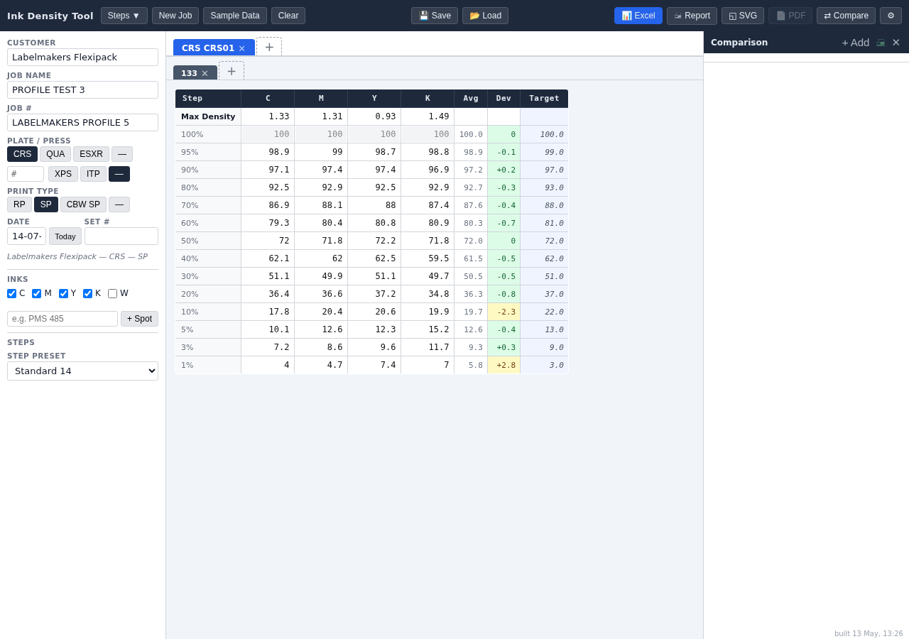

xrite-export
rust egui axum tokio
A tool for recording CMYK ink-density readings off an X-Rite eXact spectrodensitometer and turning them into finished exports — Adobe Illustrator templates, Excel workbooks, HTML reports, SVG. It replaces the tedious, error-prone job of typing dozens of density values into a chart by hand.

how it works
The spectrodensitometer — a handheld device that measures how dark a printed colour patch is — comes with its own X-Rite software called DataCatcher. Every time you scan a patch, DataCatcher behaves like an invisible extra keyboard: it types the reading straight into whichever box on screen is currently selected, then presses a key (tab, enter, or the down arrow) to jump to the next box automatically. So I built this chart's boxes in the exact same order the scanner reads a strip of patches, top to bottom in each column — which means you can scan an entire strip without ever touching the mouse or looking up from the device. When you're done, one click fills all of that data straight into a ready-made Excel spreadsheet or Illustrator artwork file, in the spots where the numbers are supposed to go — no more manually copying figures across by hand.
built with
Written in Rust, a programming language chosen for being fast and hard to crash. The same code is packaged three different ways depending on where it's needed: as a regular desktop program you double-click to open (using a toolkit called egui), as a website version anyone can open in a browser (built with a web-server toolkit called axum), and as a small Windows-only helper program that sits quietly in the background so the browser version can still tell Adobe Illustrator what to do — something a web page normally isn't allowed to do on its own. Everything the program needs is bundled inside it, so there's nothing extra to install. The live site above is the browser version.